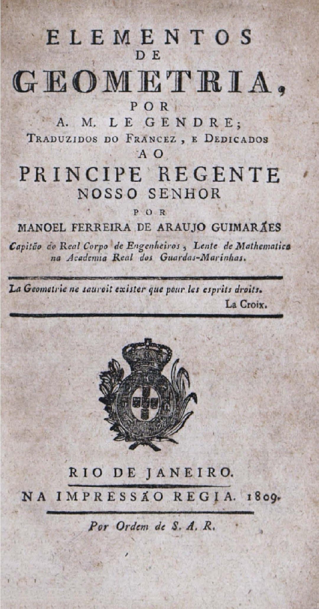

Adrien-Marie Legendre
Tratado de geometria que moderniza e reorganiza a tradição euclidiana, apresentando de forma sistemática os princípios da geometria plana e espacial. Foi uma das obras matemáticas mais influentes do século XIX.